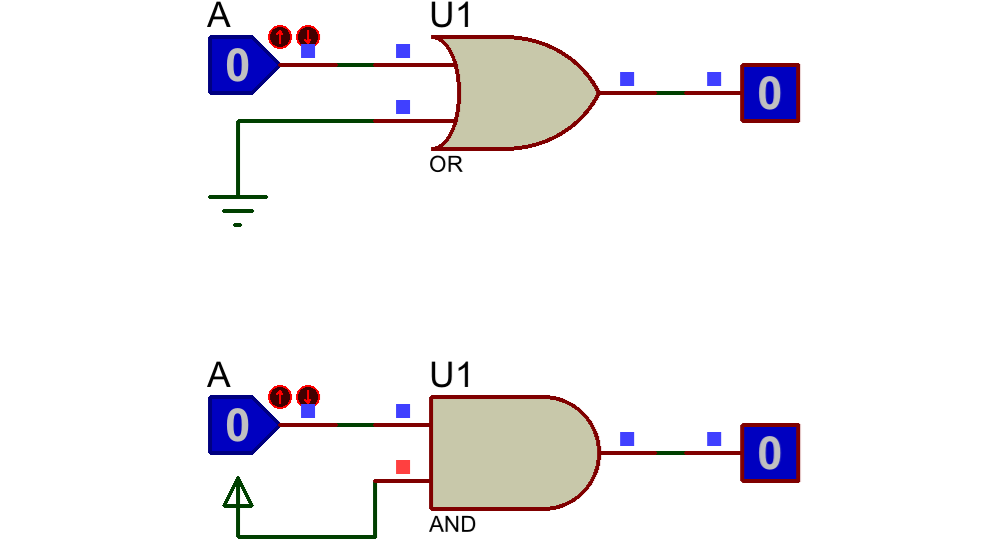
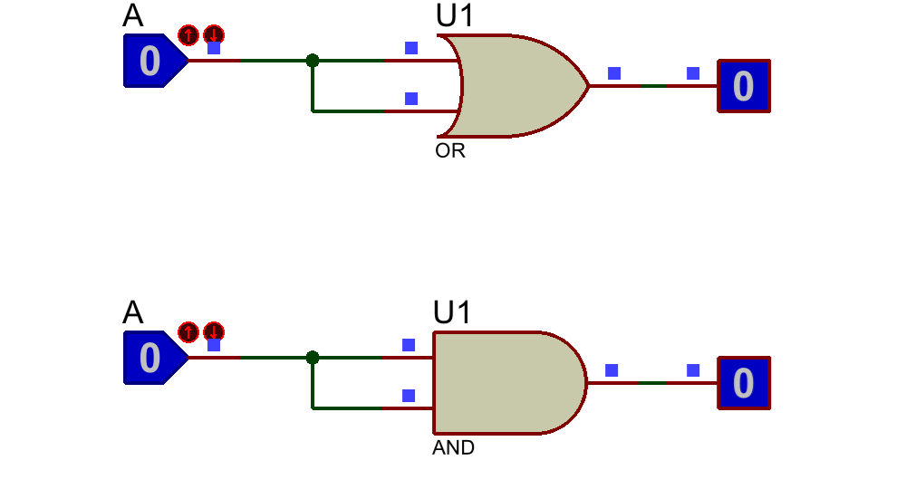
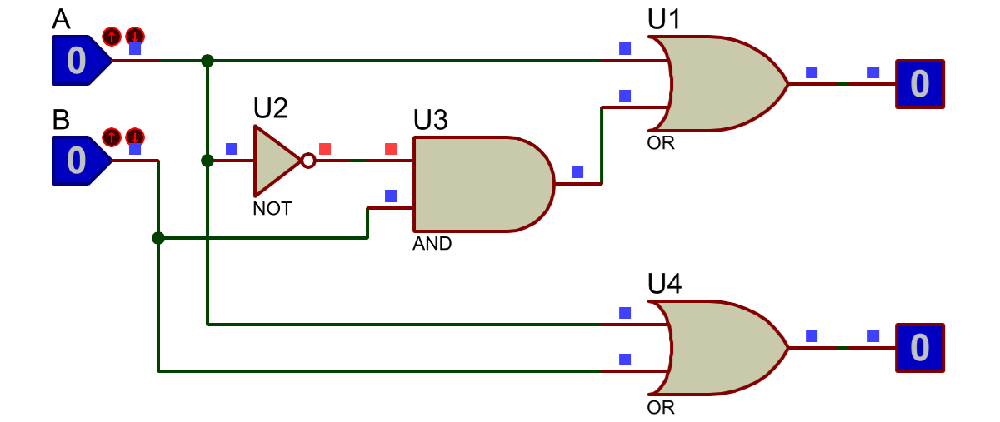
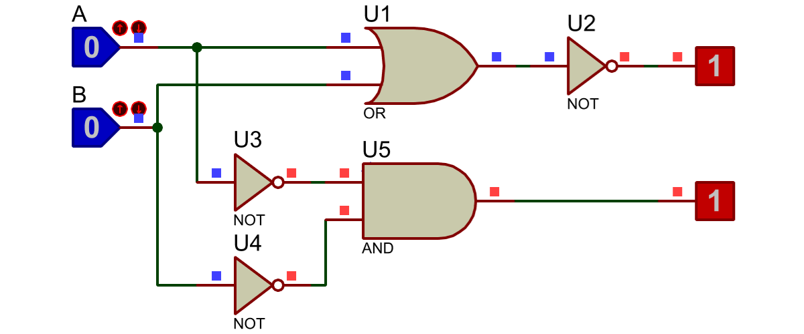
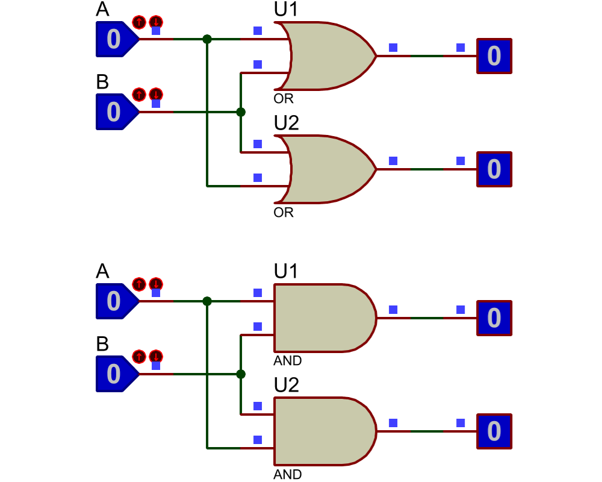

En el ámbito de la lógica existe un poderoso sistema matemático conocido como el álgebra de Boole. Desarrollada por el matemático y lógico británico George Boole en el siglo XIX, esta rama de la matemática ha demostrado ser fundamental en el diseño, la programación y el procesamiento de información.
El álgebra de Boole se basa en la lógica proposicional y se utiliza para representar un circuito lógico en forma de ecuaciones. En otras palabras, se trata de una herramienta que sirve para resolver y simplificar cualquier problema que se encuentre en los sistemas digitales. Además, el álgebra de Boole es esencial en programación, especialmente en el desarrollo de algoritmos y estructuras de control condicional. Permite evaluar condiciones, tomar decisiones y controlar el flujo de ejecución de un programa.
A diferencia del álgebra tradicional, que se basa en números y operaciones aritméticas, el álgebra de Boole utiliza las llamadas variables booleanas (0 y 1) y operadores lógicos (AND, OR, NOT) para representar y manipular los datos.
Ventajas
Este tipo de álgebra ofrece varias ventajas en el mundo de la lógica y las matemáticas. Veamos algunas de ellas:
- Las leyes del álgebra de Boole permiten simplificar expresiones booleanas complejas, lo que facilita su comprensión y análisis.
- Mediante la aplicación de técnicas de simplificación, es posible optimizar el diseño de circuitos digitales, reduciendo el número de compuertas lógicas y mejorando su eficiencia.
- El álgebra de Boole proporciona un marco matemático riguroso para el estudio de la lógica y el razonamiento lógico, lo que ha sido fundamental para el desarrollo de la computación moderna.
Aplicaciones del álgebra de Boole
El álgebra de Boole encuentra aplicaciones en una amplia variedad de áreas:
Diseño de circuitos digitales: procesadores, memorias y dispositivos lógicos programables.
Programación y algoritmos: el álgebra permite la toma de decisiones y el control del flujo de ejecución en los programas.
Sistemas de control y automatización: se utiliza en la modelización y diseño de sistemas de control, como en la industria manufacturera.
Criptografía: los principios del álgebra de Boole se aplican en algoritmos criptográficos, proporcionando la base matemática para la seguridad de la información y el cifrado de datos.
Postulados del álgebra de Boole
Un postulado es un enunciado matemático que no necesita demostración. Es algo así como un punto de partida (en otros contextos se suelen llamar también axiomas).
En el Álgebra de Boole tenemos los siguientes:
Postulado 1: Elemento neutro

Teoremas del álgebra de Boole
Un teorema es una proposición matemática que se puede demostrar a partir de los postulados que se han enunciado anteriormente.
En el Álgebra de Boole tenemos los siguientes teoremas:
Teorema 1: Idempotencia

Otras identidades


Leyes de DeMorgan
Leyes de DeMorgan 1

Propiedades del álgebra de Boole
Propiedad 1: Conmutativa
